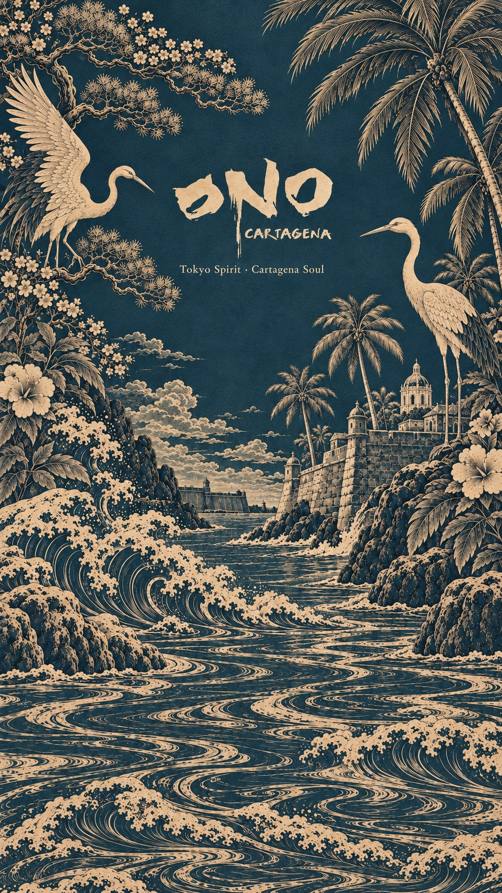

Hotel Las Islas en Barú y buceo en las Islas del Rosario: guía desde Cartagena
Arrecifes a unos 45 minutos en lancha, un hotel entre manglares y, a la vuelta, la noche en la ciudad amurallada.
Read in English →
Cartagena tiene dos caras: la ciudad amurallada y el mar que la rodea. La mejor manera de conocer las dos es repartir el viaje: unos días en las islas y unas noches en el Centro Histórico.
Hotel Las Islas
En Barú, al final de la Ciénaga de Cholón y a unos 45 minutos en lancha desde Cartagena, Hotel Las Islas es uno de los hoteles de lujo más conocidos de la zona. Está rodeado de manglares y junto al Parque Nacional Natural Corales del Rosario y de San Bernardo, así que el mar es la actividad principal: kayak, canoa, recorridos por los manglares y salidas a islotes cercanos.
Bucear en las Islas del Rosario
El parque nacional protege arrecifes de coral que están entre los más visitados del Caribe colombiano. Bajo el agua hay coral duro, esponjas y peces de colores como cirujanos, loros y ángel, además de tortugas, pulpos y langostas. Algunos puntos de inmersión conocidos son el Cantil de Isla Pavitos, Isla Gloria y el barco hundido de San Martín de Pajarales.
- Para principiantes: hay inmersiones de bautizo y careteo (snorkel) en aguas poco profundas, sin necesidad de certificación.
- Para buzos certificados: las inmersiones van de pocos metros a varias decenas, según el punto; la visibilidad cambia con el clima y la temporada.
- Con quién: reserva siempre con un centro de buceo certificado, que te indicará qué inmersiones van con tu nivel. Si te alojas en Las Islas, pregunta en el hotel por las salidas.
- Cuida el arrecife: no toques el coral, usa protector solar biodegradable y respeta las normas del parque.
Después del mar, la noche se pasa en el Centro. Casa Salvaje está en la Calle Santa Teresa #32-41: fuego en Kanibal, cena y club de jueves a sábado en SLVJ. Mira los horarios.
Cómo armar el viaje
Un orden que funciona: llega a Cartagena y pasa una o dos noches en la ciudad amurallada; sigue a Barú para los días de mar y buceo; y vuelve al Centro para la última noche. Así terminas el viaje con una cena larga y, si es fin de semana, con el club hasta las 3 am. Deja siempre un día sin buceo antes de volar.